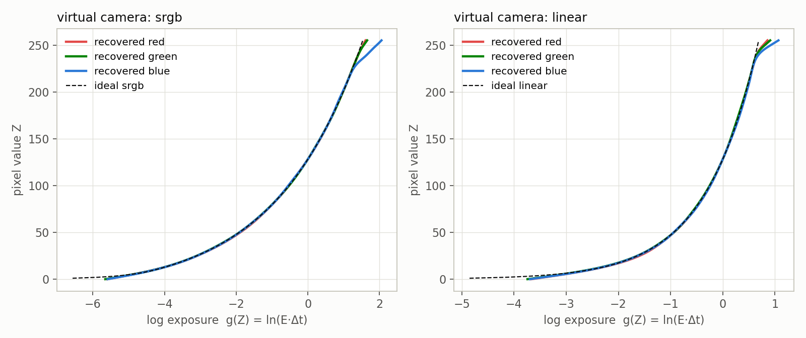
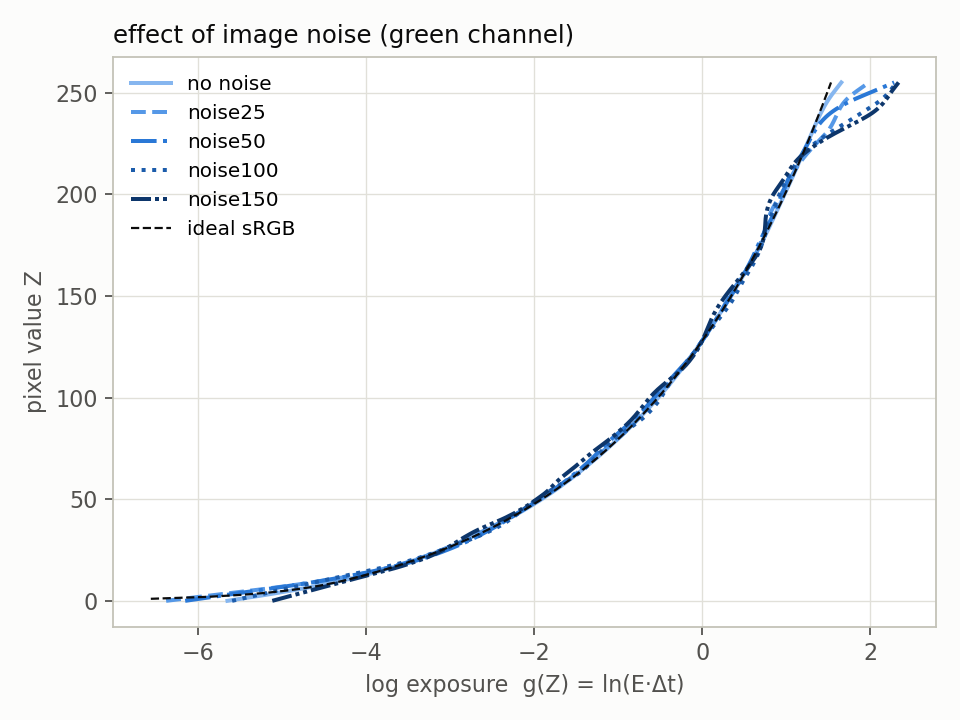
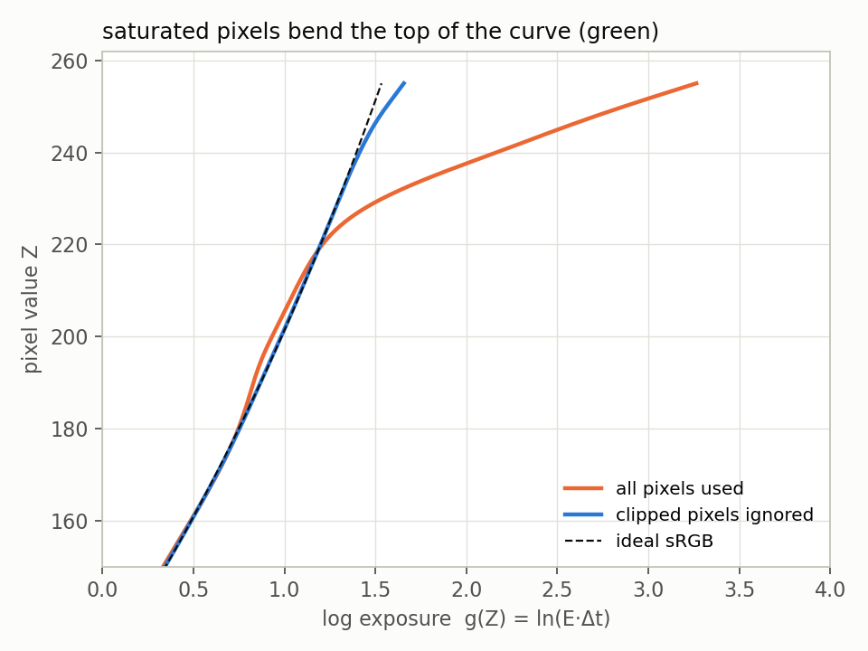
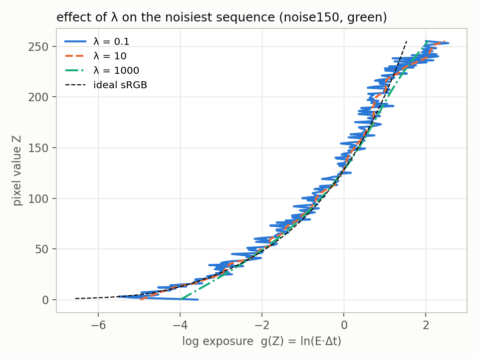
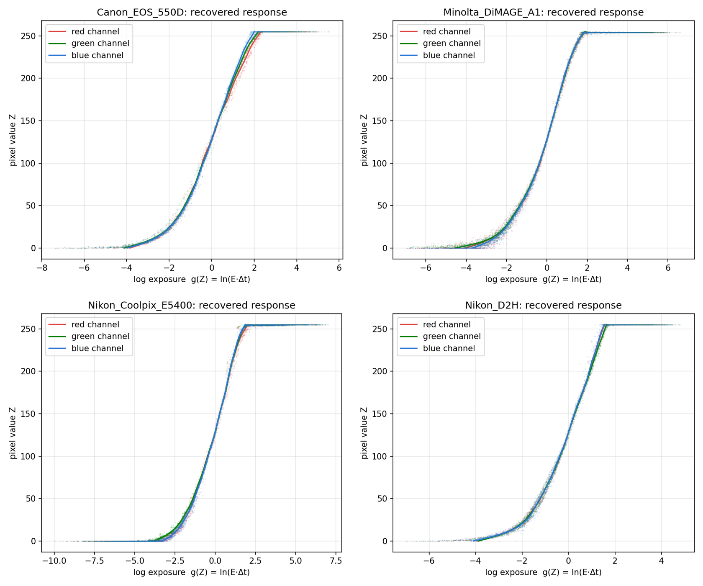
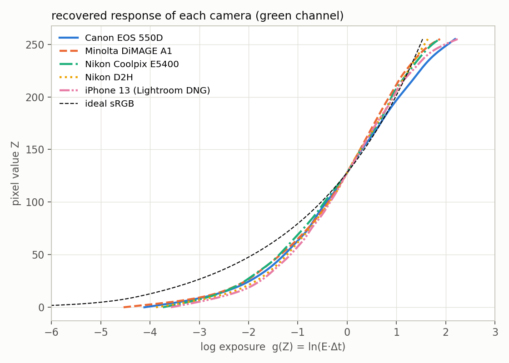
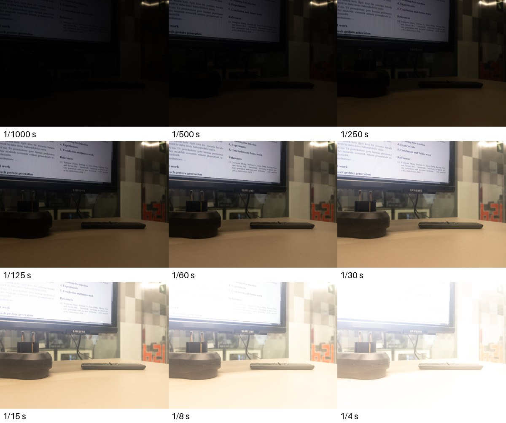
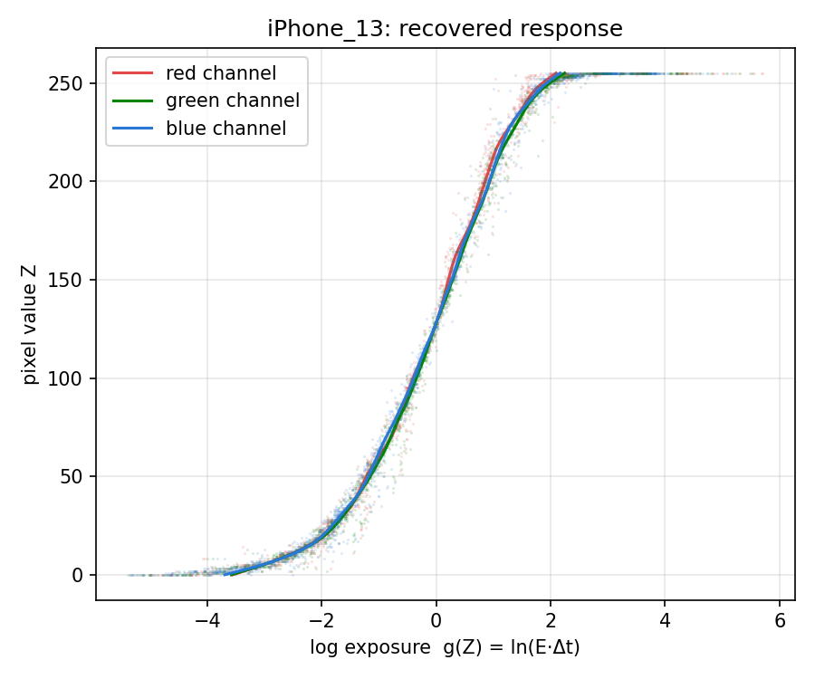
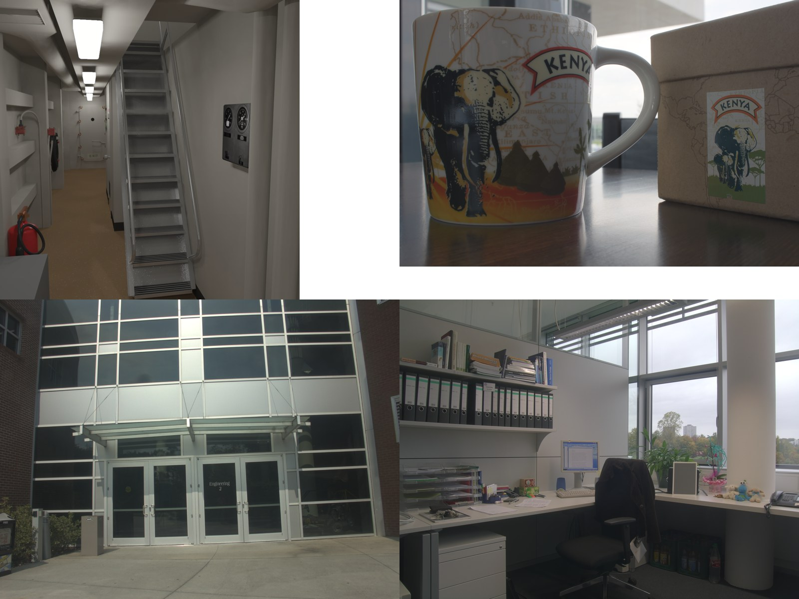
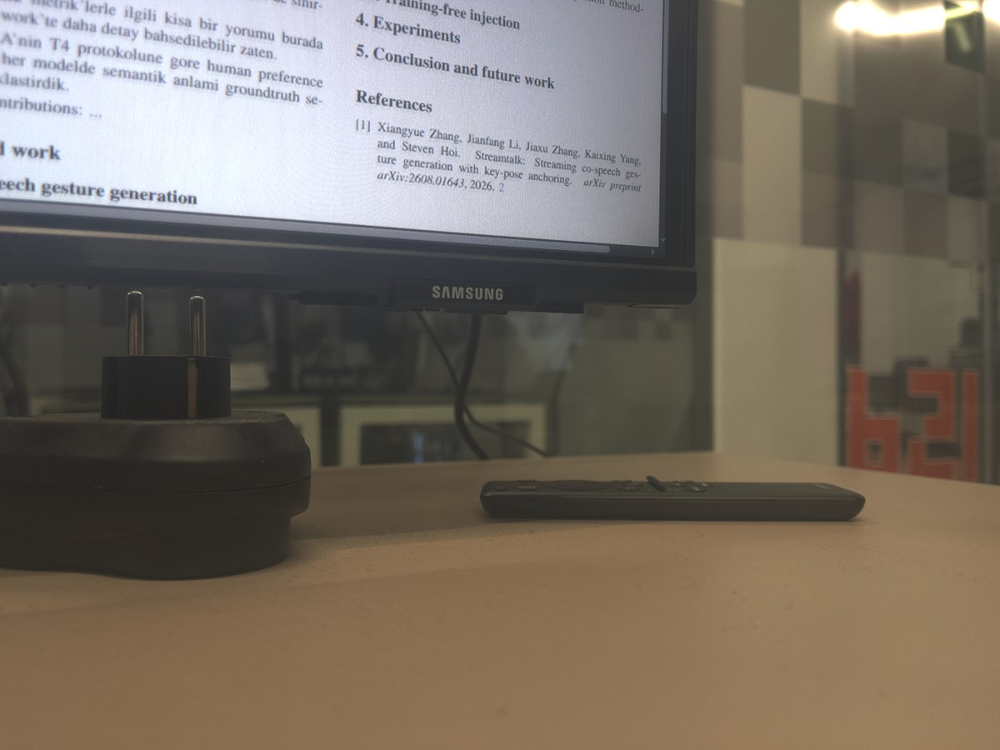

CENG 587 High Dynamic Range Imaging, Homework 1, Anıl Kılıç
For this homework I chose Option 1 which is implementing a response curve recovery algorithm myself. I selected the method of Debevec and Malik (“Recovering High Dynamic Range Radiance Maps from Photographs”, SIGGRAPH 1997) since I already wrote a reflection on this paper. In my reflection I said that the recovered curves are not compared with a ground truth, the λ value is not reported and the pixels are selected by hand. In this homework I had the chance to do these three things myself.
In this post I explain how I implemented the method. Then I validate it on the virtual camera whose response is known. After that I show the effect of the parameters, the curves of the four shared cameras and the running times. The last part is the response curve of my own phone which was the hardest part of the homework.
Contents
A camera does not store the radiance of the scene. It stores pixel values which are a nonlinear function of the exposure (irradiance times exposure time). For pixel in photograph the pixel value is:
Authors assume that increases monotonically so it can be inverted. By taking the inverse and the natural logarithm and defining the equation becomes:
Here and are known while and are unknown. Since pixel values are integers between 0 and 255, has only 256 values. These values are found together with of the selected pixels by minimizing the objective function:
The first term is the data term. The second term is the smoothness term where . Here is a hat function which gives less weight to the pixel values close to 0 and 255. Also the constraint is added to fix the scale. Since the objective is quadratic it is a linear least squares problem.
After is found the radiance of each pixel is obtained from all photographs with a weighted average. With as the total weight of pixel :
The implementation is a single Python file, hdr.py,
which is about 300 lines. I used NumPy for the arrays
and the least squares solver, Pillow for reading the
images and Matplotlib for the plots. I did not use any
HDR library or any library that computes the response curve.
It is run like this:
python hdr.py <image_folder> [--exif] [--truth srgb|linear] [--samples 200] [--lam 50]For each sequence it saves the plot of the response curve, the curve
as a CSV file, the radiance map as a Radiance .hdr file and
a tone mapped PNG. The steps of the program are below.
Loading the images and exposure times. Images are
read in order. If an image is larger than 1600 pixels on its long side
it is resized to 1600 pixels. The exposures are 1, 2, 4 and so on since only the
ratios are needed. For my phone the shutter time and the ISO are read
from the EXIF data of each file with the --exif option. The
exposure is shutter time multiplied by ISO.
Selecting the pixels. According to the paper is enough. This means about 50 pixels for 9 photographs. Authors selected the pixels by hand but I wanted to select them automatically. I used two rules.
The first rule is using only flat regions. I compute the gradient magnitude of the middle exposure. Only the pixels whose gradient is below the median are kept. A pixel in a flat region keeps its value even if the camera moves a few pixels between the photographs.
The second rule is covering all brightness levels equally. If pixels are selected randomly they follow the histogram of the image. For a dark scene most of them would be dark pixels. Instead I take N target brightness levels with equal spacing between the darkest and the brightest candidate. For each level one random candidate pixel with that brightness is selected.
Duplicate pixels are removed at the end. Because of this when 200 samples are requested the result is between 150 and 200 pixels depending on the scene.
Solving for
.
This part follows the gsolve code in the appendix of the
paper. I wrote it with NumPy indexing instead of loops. For N pixels and
P photographs the matrix has
rows and
columns. For example with 200 pixels and 9 photographs it is 2055 × 456.
It is solved with numpy.linalg.lstsq for each color channel
separately.
Radiance map. This is the weighted average given above. It is computed for the whole image by processing one exposure at a time so the memory usage stays low. Some pixels are black or white in every exposure. Their total weight is zero. I take these pixels from the longest exposure if they are black. If they are saturated I take them from the shortest exposure.
Output. I wrote a small function that saves the
radiance map in the Radiance .hdr (RGBE) format. To view
the result I also wrote a simple global tone mapping which is Reinhard’s
operator with a white point followed by gamma 2.2. The tone mapping is
not a part of the method.
The images in the virtual_camera folder are rendered
with a path tracer and saved with a known response. Thus the correct
curve is known. For the srgb sequence it is the sRGB
formula given in the homework text. For the linear sequence
it is a straight line. Since the method finds
only up to a constant, I shifted the ideal curve so that it is also 0 at
pixel value 128. Then I measured the RMS difference for the pixel values
from 5 to 250. The unit is the natural logarithm of exposure. An error
of 0.01 means about 1% error in exposure.

Recovered curves and the ideal response (dashed) for the sRGB and the linear virtual cameras.
| Sequence | Red | Green | Blue | Mean |
|---|---|---|---|---|
| srgb | 0.018 ± 0.003 | 0.011 ± 0.001 | 0.083 ± 0.003 | 0.037 |
| linear | 0.025 ± 0.003 | 0.022 ± 0.002 | 0.040 ± 0.004 | 0.029 |
| noise25 | 0.089 ± 0.010 | 0.094 ± 0.007 | 0.097 ± 0.011 | 0.093 |
| noise50 | 0.098 ± 0.014 | 0.112 ± 0.013 | 0.136 ± 0.016 | 0.115 |
| noise100 | 0.164 ± 0.019 | 0.171 ± 0.013 | 0.182 ± 0.024 | 0.172 |
| noise150 | 0.205 ± 0.015 | 0.211 ± 0.017 | 0.220 ± 0.009 | 0.212 |
RMS error compared to the ideal response (ln exposure, pixel values 5 to 250). Mean ± standard deviation over 5 random seeds of the pixel selection with 200 samples and λ = 50.
These results show that the implementation works correctly. For the sRGB camera without noise the red and green curves are within 1 to 2% of the ideal curve. For the linear camera the error is between 2 and 4%.
The weak part is the top of the blue curve. Below pixel value 225 all three channels of the sRGB camera are within about 1% (RMS 0.013, 0.006 and 0.011). Above 225 the blue channel moves away from the ideal curve (RMS 0.26 for the values 226 to 250) while red and green stay around 0.02 to 0.03. The hat function gives very small weight to these values. Thus only a few samples decide the result there.
Noise increases the error gradually. The error is 0.04 without noise while it is 0.21 for the sequence with the most noise. As seen in the figure below the middle part of the curve does not change much. The error is mostly at the two ends of the curve.

Green channel recovered from the sRGB virtual camera for increasing noise.
This was the main problem of my implementation. The first result on the sRGB virtual camera had an RMS error of 0.26 although the linear camera was already correct. The curve was the same as the ideal one up to about 220. After that it bent to the right.
First I checked the images. For the pixels with a given value in one image I looked at their values in the next image. They were consistent with the sRGB formula. For example value 150 should become 204.9 when the exposure is doubled. In the images it becomes 204 or 205. Thus the images were correct which means the problem was in my fit.
Then I looked at the selected pixels one by one. Some of them were on the ceiling lights which are saturated in every exposure. However in a JPEG image a saturated pixel is not always exactly 255. One of these pixels had the following values in the nine exposures:
192, 240, 251, 239, 238, 241, 254, 255, 255The hat function gives zero weight to 255 but the weight of 238 is 17. Thus the solver used this pixel as if it had the value 240 at exposures which are 2, 16 and 32 times longer. This pulled the top of the curve to much higher exposures.
I solved this with a rule that uses the order of the exposures. When a pixel reaches 250 in a shorter exposure it is ignored in all longer exposures since it can only be saturated there. Giving zero weight to all values above 250 did not solve the problem because the wrong values go down to about 238. The same rule is also used for the radiance map.
| Variant | RMS error (sRGB, mean of channels) |
|---|---|
| All pixels are used | 0.263 |
| Clipped pixels are ignored | 0.036 |

Top part of the green curve before and after the rule.
This is explained in Section 2. Selecting from flat regions was important for my phone since it moved a few pixels between the photographs. Covering dark and bright values equally was important for all sequences.
The Canon images are 5184 × 3456 pixels. Nine of these images use a lot of memory as floating point arrays. Also the response curve does not need this resolution. Thus the images are resized to 1600 pixels on the long side while loading. The radiance map is computed at this size.
The readme file says to assume that the exposure doubles for each image so I did that. Apart from that I looked at the EXIF data to see the real values. The Canon sequence has doubling shutter times at a fixed aperture of f/16. However the Nikon D2H sequence is different. Its shutter times are 1/400, 1/320, 1/200, 1/160, 1/100, 1/80, 1/40, 1/20 and 1/10 seconds. This is because the aperture also changes from f/10 to f/4.2. When the shutter time is divided by the square of the f-number the ratios between the images are 1.73, 2.29, 1.75, 2.30, 1.77, 2.0, 2.0 and 2.0. Thus the exposure doubles on average. This showed me that the exposure is not only the shutter time which became important for my phone too.
The λ value is not reported in the paper. Thus I tried different values. The table shows the mean RMS error over three channels and 5 seeds.
| λ | srgb | noise50 | noise150 |
|---|---|---|---|
| 0.1 | 0.080 | 0.210 | 0.373 |
| 1 | 0.068 | 0.162 | 0.280 |
| 10 | 0.043 | 0.135 | 0.224 |
| 50 | 0.037 | 0.115 | 0.212 |
| 100 | 0.041 | 0.099 | 0.209 |
| 1000 | 0.202 | 0.191 | 0.228 |

The sequence with the most noise (noise150), green channel, for three values of λ.
When λ is small the curve follows the noise so it is not smooth. It is not monotonic either. When λ is very large the curve cannot bend enough at the dark end. In this case even the sequence without noise has an error of 0.20. The values between 50 and 100 are the best for all three sequences. The sequences with more noise need a larger value. I used λ = 50 for all results in this post.
The number of pixels has a much smaller effect:
| Samples requested | srgb | noise50 | noise150 | Solve time for 3 channels (s) |
|---|---|---|---|---|
| 50 | 0.026 | 0.119 | 0.191 | 0.14 |
| 100 | 0.050 | 0.154 | 0.228 | 0.13 |
| 200 | 0.037 | 0.115 | 0.212 | 0.18 |
| 500 | 0.029 | 0.118 | 0.211 | 0.47 |
| 1000 | 0.026 | 0.125 | 0.211 | 0.70 |
There is no clear trend in this table. The differences between the rows are similar to the differences between the random seeds. I could not find why the row with 100 samples is a little worse. As the paper says 50 pixels are already enough when they are selected well. More pixels only increase the solve time. I used 200 as the default value.
The real cameras do not have a ground truth. Thus I can only check that the curves are smooth and monotonic and the three channels are close to each other. All of the curves satisfy this.

Recovered curves of Canon EOS 550D, Minolta DiMAGE A1, Nikon Coolpix E5400 and Nikon D2H. The dots are the selected pixels at their fitted exposures.

Green channel of all cameras including my phone compared to the ideal sRGB curve.
| Camera | Slope in midtones | Exposure range between Z = 20 and Z = 235 | Largest difference between red and blue |
|---|---|---|---|
| Canon EOS 550D | 1.74 | 5.6 stops | 0.26 |
| Minolta DiMAGE A1 | 1.62 | 5.2 stops | 0.07 |
| Nikon Coolpix E5400 | 1.75 | 5.3 stops | 0.08 |
| Nikon D2H | 1.63 | 4.9 stops | 0.07 |
| iPhone 13 (Lightroom) | 1.57 | 5.0 stops | 0.09 |
| ideal sRGB | 2.12 | 6.9 stops | – |
Slope in midtones is the change of ln exposure divided by the change of ln pixel value between Z = 64 and Z = 192 which is similar to a gamma value. The last column is the largest difference between the red and blue curves for Z = 20 to 235 in ln units.
None of the cameras has an sRGB response. All of them are steeper than sRGB in the dark half. Pixel value 50 is reached at ln exposure −1.2 to −1.4 for the cameras while sRGB reaches it at −1.9. This is about 0.8 to 1.1 stops more light relative to pixel value 128. This means the cameras make the dark regions darker than sRGB which gives an image with more contrast.
Apart from that the cameras cover a smaller exposure range with 8 bits. Between pixel values 20 and 235 the cameras cover about 5 to 5.6 stops while sRGB covers almost 7 stops.
The curves of the Canon and the iPhone bend at the top instead of going directly to 255. Also the channels of the Canon are the most different from each other. Its red and blue curves have a difference up to 0.26 while for the other cameras the three channels are within 0.1.
The times are measured on a MacBook with an Apple M4 processor and 24 GB of memory using Python 3.13.9 and NumPy 2.3.5. The table shows the median of 5 runs in seconds with 200 requested samples and λ = 50.
| Sequence | Images | Size used | Samples | Load | Sample + solve | Radiance map | Total |
|---|---|---|---|---|---|---|---|
| srgb | 9 | 1024×1024 | 163 | 0.04 | 0.18 | 0.34 | 0.57 |
| linear | 7 | 1024×1024 | 152 | 0.03 | 0.20 | 0.29 | 0.54 |
| noise25 | 9 | 1024×1024 | 180 | 0.05 | 0.21 | 0.34 | 0.58 |
| noise50 | 9 | 1024×1024 | 189 | 0.05 | 0.23 | 0.34 | 0.61 |
| noise100 | 9 | 1024×1024 | 199 | 0.06 | 0.23 | 0.33 | 0.62 |
| noise150 | 9 | 1024×1024 | 200 | 0.06 | 0.23 | 0.32 | 0.60 |
| Canon EOS 550D | 9 | 1600×1067 | 200 | 1.22 | 0.27 | 0.50 | 1.99 |
| Minolta DiMAGE A1 | 13 | 1600×1200 | 200 | 0.18 | 0.29 | 0.71 | 1.20 |
| Nikon Coolpix E5400 | 16 | 1600×1200 | 197 | 0.68 | 0.32 | 0.84 | 1.83 |
| Nikon D2H | 9 | 1600×1060 | 200 | 0.39 | 0.26 | 0.48 | 1.13 |
| iPhone 13 | 9 | 1600×1200 | 200 | 0.27 | 0.29 | 0.53 | 1.09 |
Recovering the curve is fast. Selecting the pixels and solving the three least squares problems takes about 0.2 to 0.3 seconds for every sequence. This is because the size of the problem depends on the number of pixels and photographs but not on the image size.
The time of the radiance map depends on the number of pixels multiplied by the number of photographs. That is why the Nikon sequence with 16 images is the slowest in that column. Also loading can take the most time. For example decoding nine Canon JPEG files of 18 megapixels takes longer than the algorithm.
My phone is an Apple iPhone 13. I used its main camera which has a 5.1 mm lens with a fixed aperture of f/1.6.
To capture the photographs I used the camera of the Adobe Lightroom app for iOS (version 12.0.0) in Professional mode. In this mode the shutter time and the ISO can be set by hand.
The final sequence has 9 photographs. ISO is fixed at 40. The shutter times are 1/1000, 1/500, 1/250, 1/125, 1/60, 1/30, 1/15, 1/8 and 1/4 seconds. The photographs were captured as DNG (raw) files. Then they were exported from Lightroom as JPG with the same settings for every photograph without any edits.
The scene is my desk with a monitor. It has a bright screen, a dark power adapter and a light colored table. The phone was resting on the desk during the whole sequence. I did not use a tripod.

The final sequence from 1/1000 s to 1/4 s at ISO 40.
I needed four attempts to obtain this sequence. I think the failed attempts are more interesting than the successful one so I explain them too.
The algorithm assumes that the pixel value depends only on the exposure. This can be tested directly on the photographs without knowing the response. I take all pixels with a certain value in one photograph. Then I look at their value in the next photograph. If the exposure step is the same this mapping should be the same for every pair of photographs. I applied this test on the means of 32 × 32 blocks so small camera movement does not affect it. I also read the EXIF data of every file. With this I noticed problems which I did not see while capturing.
Attempts 1 and 2 were captured directly as JPG in the Lightroom camera.
The first sequence had eleven photographs of the view from my window with shutter times from 1/10900 to 1/25 seconds. The EXIF data showed that the ISO changed between 40 and 125 from one photograph to another. Thus the real exposure was different from what I set with the shutter time. However the brightness did not follow the shutter time even for the photographs with the same ISO. To measure this roughly I converted the pixel values to linear values with the sRGB formula. Then I compared the same blocks in two photographs:
| Pair (both ISO 40) | Exposure change in EXIF | Measured change |
|---|---|---|
| 1/5000 → 1/500 s | 10× | 2.6× |
| 1/5000 → 1/100 s | 50× | 4.1× |
| 1/2000 → 1/100 s | 20× | 2.2× |
| 1/100 → 1/25 s | 4× | 9.3× |
A step of 20× changes the image less than a step of 4×. This is not possible with a single response curve.
The second sequence had thirteen photographs of my desk. Each photograph was about one stop apart when shutter time and ISO are multiplied. The steps were correct this time. However the test in Section 8.2 failed. For a step of one stop the blocks with green value 60 moved to these values:
| Part of the sequence | Value after one stop |
|---|---|
| Dark photographs | 97 |
| Middle photographs | 70 to 77 |
| Bright end | 110 |
In sRGB linear values the one stop steps were measured as 1.4 to 1.6 stops in the dark photographs. In the middle photographs they were only 0.33 to 0.44 stops. After that the image became white suddenly. This also happened between two photographs with the same ISO (1/100 → 1/50 s at ISO 125 was measured as 0.33 stops). Thus the changing ISO was not the only reason.
This is the same behavior as attempt 1. The middle of the sequence is compressed while the end jumps. I think the reason is that the image pipeline of the phone changes its tone mapping for every photograph to make the image look good. In this case there is no single response function for these JPG files. I cannot see inside the pipeline so this is my conclusion from the measurements. I did not verify it directly. The assumption of Debevec and Malik is not valid for such a camera. Setting the shutter time and the ISO by hand does not turn this processing off.
For the third attempt I changed the format to DNG in the Lightroom camera. A DNG file contains the raw sensor data. Thus the tone mapping of the phone is not applied. Lightroom applies the same rendering to every photograph when exporting. I also kept the ISO at 40 for every photograph. Only the shutter time was changed from 1/8400 to 1/30 seconds.
This time the test passed. One stop steps gave the same mapping for every pair. However the exposure range was not suitable for an indoor scene. The three shortest exposures were 86 to 100% black. The longest exposure had only 1.7% saturated pixels. Thus there was almost no data for the top of the curve.
I used the same settings with longer exposures from 1/1000 to 1/4 seconds. The table below shows the test for the final sequence. Each column is a starting value while each row is a pair of consecutive photographs.
| Frames | Step (stops) | Z=40 | Z=60 | Z=90 | Z=120 | Z=150 | Z=180 | Z=210 |
|---|---|---|---|---|---|---|---|---|
| 2 → 3 | 1.00 | 76 | 94 | – | – | – | – | – |
| 3 → 4 | 1.00 | 71 | 100 | 145 | – | – | – | – |
| 4 → 5 | 1.06 | 75 | 104 | 145 | 178 | 204 | – | – |
| 5 → 6 | 1.00 | 78 | 104 | 144 | 176 | 199 | 224 | 240 |
| 6 → 7 | 1.00 | 76 | 106 | 144 | 176 | 205 | 225 | 242 |
| 7 → 8 | 0.91 | – | 105 | 142 | 170 | 198 | 222 | 243 |
| 8 → 9 | 1.00 | – | – | – | 176 | 205 | 227 | 244 |
Green value in the next photograph for the blocks that start at the value in the column header. “–” means there were not enough blocks. The pair 1 → 2 is not shown since photograph 1 is too dark.
The values in each column are almost constant. The values in the 7 → 8 row are a little lower which is consistent with its smaller step (1/15 → 1/8 s is 0.91 stops). This is what a single response curve gives. The sequence also covers the whole range. The first photograph is 59% black while the last one is 63% saturated.

Recovered response of the iPhone 13 sequence
(python hdr.py photos --exif, 200 samples, λ =
50).
The three channels are within 0.09 of each other in ln exposure for the pixel values 20 to 235. Among the five cameras this curve has the most contrast in the midtones (the slope is 1.57 while it is 2.12 for sRGB). It bends softly at the top. Pixel values 20 to 235 cover about 5 stops.
The selected pixels have more noise than the other cameras. Also the red curve has a small wave between about 160 and 220. I think this is expected since the phone was not on a tripod. Its sensor is small too.
One point should be stated clearly. The sequence was captured as DNG then rendered by Lightroom. Thus this curve is the response of the iPhone 13 sensor together with the rendering of Lightroom. It is not the response of Apple’s own JPG pipeline. According to attempts 1 and 2 my conclusion is that Apple’s JPG pipeline does not have a single response curve which this method can recover.
The homework is about the response curves. However the radiance maps are a good final check. A wrong curve would cause banding or wrong colors where the exposures are combined.

Tone mapped radiance maps of the virtual sRGB camera, Canon EOS 550D, Minolta DiMAGE A1 and Nikon Coolpix E5400.

Tone mapped radiance map of my iPhone sequence. The text on the monitor and the dark adapter are both visible which is not possible with any single exposure of the sequence.
From the darkest pixel to the brightest pixel the radiance maps cover between 10.6 stops (iPhone) and 16.9 stops (virtual sRGB camera). In the iPhone map the darkest regions are brighter than they should be. The darkest 1% of the image is only about 7 times darker than the median. I think this is caused by the lens flare of the bright monitor in the longest exposures. The method cannot remove this.
The top and the bottom of the curve are the least reliable parts. The pixel values close to 0 and 255 have small weights and few samples. This is visible in the blue channel of the sRGB camera. It is also visible in all sequences with noise.
Monotonicity of is not enforced. With λ = 50 all curves were monotonic except four very small decreases in the red channel of the virtual sequence with the most noise. However the method does not guarantee this.
The exposure values must be correct. I used the readme file for the shared sequences while I used the EXIF data for my phone. Attempt 1 showed that the real exposure can easily be different from the value that was set.
The camera must have a single response curve. A modern phone does not satisfy this assumption. In my reflection I wrote that the biggest limitation of the paper is that the exposure times must be known exactly. After this homework I think this assumption is a bigger limitation for the cameras of today.
The scene has to be static. The camera should not move either. Selecting the pixels from flat regions was enough for the small movement in my sequences. However the radiance map would have ghosting with larger movement.
To summarize, the implementation recovers the known sRGB and linear responses within a few percent. λ between 50 and 100 gives the best results. About 50 pixels are enough when they are selected well. The whole process takes one to two seconds for a sequence. The most useful thing I learned is testing the data before trusting the result. Both the problem with the saturated pixels and the problem with my phone were found by looking at how the pixel values change from one exposure to the next. They were not found by looking at the final curve.
The code (hdr.py), the script that produces the tables
and figures of this post (experiments.py), my iPhone
sequence and all results are in the submitted hw1.zip. The
README file lists the dependencies and the commands.